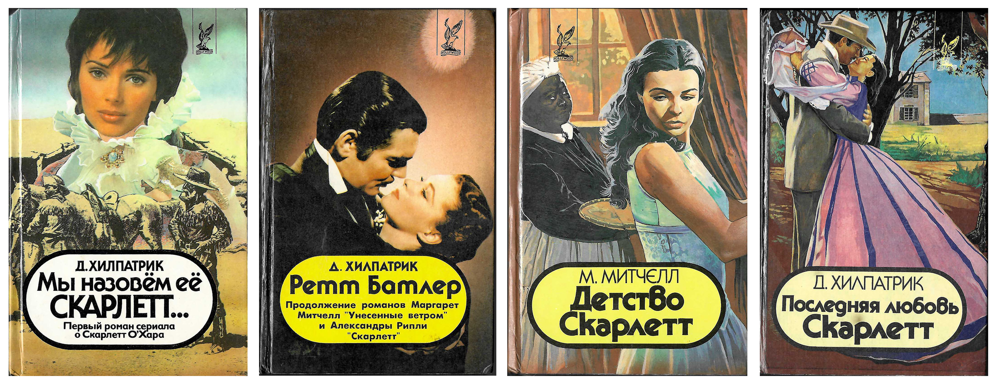

In the 1990s, Russia's fledgling capitalist book industry decided it desperately needed a bestseller
list, or at least so thought the editors of the industry newspaper Knizhnoe obozrenie (The Book Review).
By November 1993, that newspaper had launched the first bestseller lists in Russian literature. The lists
started as small notices in the bottom corner of page 2, but soon blossomed into full-page features. They
ran throughout the 1990s. (You can read my article on the development of these lists
here.)
Over the last several years, I've collected a full set of these lists, and with the help of two Georgetown
research assistants, Amelia Benjamin and Nina Armstrong, created a data set based on them. The data set is
open source, but I wanted to present some of it here. For starters, here's a bar chart race of the bestselling
authors of the first post-Soviet decade:
Bestselling Fiction Authors by Ranked Points*, Nov. 1993–Jun. 1999
* Ranked points assigns points to each author according to rank on the bestseller list. First place earns 10
points, second place 9 points, and so on. This chart aggregates those points over the course of the lists.
As you can see, I added a few annotations to orient you in what was happening. Some might need more explanation,
one perhaps especially. Julia Hillpatrick, an author who never existed, leads the bestseller lists briefly in mid-1994.
Julia Hillpatrick—or more properly, Джулия Хилпатрик (Dzhuliia Khilpatrik), because she never existed in English—was
the penname taken on by a collective of men writing in Minsk who wanted to capitalize on the late-Soviet success of
Margaret Mitchell's Gone with the Wind and create their own bestsellers. They did just that with titles such
as Rhett Butler, We'll Call Her Scarlett, and Scarlett's Last Love.

Covers of the bestsellers written by "Julia Hillpatrick" in Minsk in 1994
Hillpatrick is only the most successful of several "literary masks" donned by writer collectives in search of commercial
success. Others include Amanta Santos, a "Mexican" writer who penned the post-Soviet sequel to a novelization of the Mexican
telenovella, Simplemente Maria. The Russian translation was Prosto Mariia, and Amanta Santos's contribution
to the literature was called Prosti, Mariia! (or Forgive me, Maria!), a pun that only works in Russian.
These literary masks populate one particularly strange chapter in a possible story these bestseller lists tell.
That possible story is about translated vs. homegrown bestsellers. The lists begin with names familiar from Western (and especially
Anglo-American) bestseller lists: Stephen King, Michael Crichton, Dean Koontz. (Though a post-Soviet twist put
Jennifer Lynch and Scott Frost at the top with their novelization of the wildly popular Twin Peaks TV show.)
But over the course of the decade Russian bestsellers push out the foreigners. If we look again at the bar chart race
with the translation status of the authors isolated, the trajectory becomes clearer:
Bestselling Fiction Authors with Colors indicating Translation Status, Nov. 1993–Jun. 1999
So what is happening here? Russian authors are learning how to make bestsellers, but they're also adapting them
to their readership. Homegrown bestsellers were more popular by the end of the decade and not only because publishers
did not want to pay for translations. They appealed to Russian readers. And they did so through genre innovations.
The first innovation was the action thriller — testosterone soaked dreams of vigilante justice that answered
the chaos of the post-Soviet world with the moral and physical strength of the extraordinary individual. This
genre brought Daniil Koretskii and Viktor Dotsenko to the top of the lists in 1995.
By 1996, Aleksandra Marinina burst onto the scene with a new genre that would dominate the rest of the decade: the
zhenskii detektiv. These detective novels whose author, protagonist, and intended audience were all women
answered the success of the action thriller, by bucking retrograde gender norms to show women outsmarting (and not
just out-muscling) the mire of chaos capitalism.